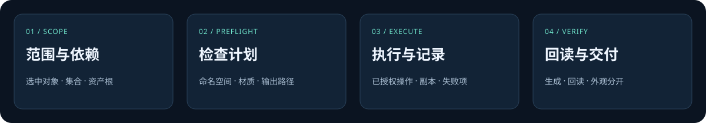

命名有依据
对象身份与名称分开。批次外占用、名字交换和共享数据，各自判断。
ASSET WORKFLOW / V2.0.0
V2.0.0 · 开源指令与辅助工具让每一批资产，都有清楚的去向。
从命名、材质检查，到导出与回读，把重复的整理任务写成 Agent 能理解、能检查、能追踪的流程。
复制后粘贴到支持 Skills 的 Agent 聊天框即可。
BUILT FOR REAL WORK
Skill 为 Agent 提供任务组织与检查方法。具体软件连接、素材和结果判断，仍然来自当前项目。
对象身份与名称分开。批次外占用、名字交换和共享数据，各自判断。
问题落到对象、槽位和图像来源。打包贴图、UDIM 和程序纹理不混为一谈。
逐项记录生成、回读、外观检查，保留失败与未验证项。

START WITH ONE REQUEST
读取选中资产，整理问题位置与建议。工程保持原样。
使用 $blender-asset-pipeline 检查当前选择的道具。 只报告命名、空材质槽和缺失贴图问题，暂不修改工程。
沿用项目命名规范，先检查计划，再在副本中处理。
使用 $blender-asset-pipeline 整理 Props 集合。 在副本中按我提供的命名表改名，保留共享网格与材质，输出改名前后对照。
只导出需要的格式；目标文件、回读与视觉检查分别记录。
使用 $blender-asset-pipeline 将选中资产逐项导出 GLB。 保留层级，不覆盖同名文件；在隔离场景回读，列出尺寸、材质、贴图和未验证项。
WHAT CHANGED / V2
检查范围、命名空间、目标重名及导出碰撞。脚本不连接 Blender。
每个资产单独标记已做、失败、跳过与未验证，便于中断恢复。
名字交换合法；跨命名空间同名不一定冲突；输出路径按目标平台判断。
固定 v2.0.0；已有同名技能先备份，完成后报告实际目录与版本。
PROBLEM / DECISION / REVIEW
根据已有记录说明问题、处理与验证范围。做过的检查写清楚，尚未实际执行的部分保留为规则。
V2 将稳定 ID 与名称分开；只检查时不为写 ID 而修改工程。
检查器覆盖 A/B 名称互换、不同命名空间，以及批次外已占用名称。
文件生成、回读和外观检查各有自己的状态与证据。
PLAN → EVIDENCE
本轮用合成输入检查规则，不把示例状态写成生产交付成绩。
COPY → PASTE → INSTALL
请安装 Blender Asset Pipeline v2.0.0： https://github.com/KKKKKennys/blender-asset-pipeline 先阅读 INSTALL.md，安装到当前 Agent 的用户技能目录；已有同名版本先备份再升级。 完成后告诉我版本、路径和调用方式，仅安装，不操作工程。
只发链接时，记得补一句“帮我按页面安装”。仓库支持按 tag 固定版本。
已有同名 Skill 会先备份再升级。安装本身不修改三维工程，也不会自动配置 Blender、MCP 或 Remotion。
GOOD TO KNOW
不会。安装只把规则和工具放到技能目录。实际执行仍依据你给出的范围与任务。
可以使用可用的 Blender MCP，也可使用指定的 Blender Python 环境。计划检查器仅需 Python 3.8+。
这是供 Agent 使用的指令型 Skill，加上只读计划检查工具。它没有 Blender 插件界面或通用批处理执行器。
V2 的检查脚本和合成用例已运行。没有宣称已完成生产资产批处理、视觉验收或效率基准。